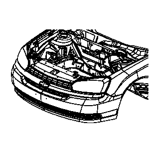
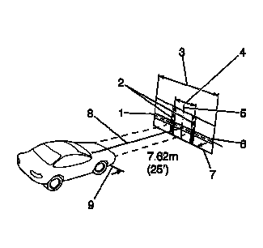
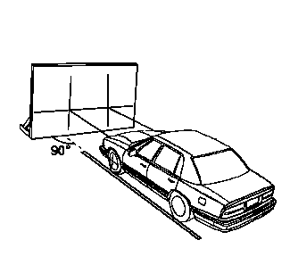
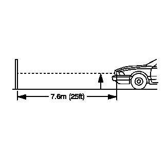
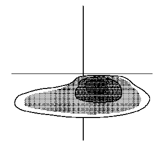
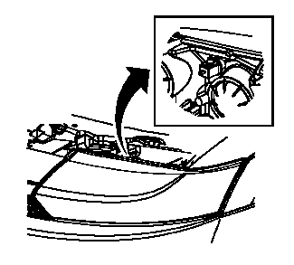

前照灯对光
目视对光准备程序
注意:
有些国家法规和地方法规规定了前大灯的对光要求。在进行前大灯对光时遵守所有这些法规。
需要进行前大灯对光的情况：
•
当安装了新的前大灯灯壳时。
•
如果维修车身前端时碰到了或可能碰到了，干扰到了前大灯或其支座。

对光屏应符合以下标准：
•
对光场所应有一块足够大的水平地面，除足以容纳车辆外，从前大灯表面至对光屏前端之间还应有另外7.62 米（25 英尺）的空间。
•
屏幕为1.52 米（5 英尺）高x 3.66 米（12 英 尺）宽，表面白色无光泽并能较好地屏蔽外来光 线，并且能根据车辆停放的地面进行适当调整。 对光屏应能前后移动，以使其始终与车辆保持平 行。
•
在屏幕上应作一条固定的垂直中心线，两条可横向调整的垂直标记胶带，一条可纵向调整的水平标记胶带。
•
如果买不到常规市售对光屏，可用约1.83 米（6 英尺）高、3.66 米（12 英尺）宽的垂直墙面替代，但墙面应干净平整且连续。表面应用可洗的非光滑白漆加工。

•
对光屏安放得当后，在前大灯灯罩的正下方画出一条基准线，以标明对光时前大灯的相应位置：
–
两个前大灯之间的距离(1)
–
对光屏中心线(2)
–
可调垂直指示装置(3)
–
可调水平标记胶带(4)
–
对光屏图(5)
–
右侧前大灯指示装置位置前方的垂直中心线 (6)
–
7.62 米（25 英尺） (7)
–
车辆轴线(8)
–
可调垂直指示装置
–
前大灯水平中心线
–
左侧前大灯前方的垂直中心线
在前大灯对光之前，必须执行以下步骤：
1.
清除车上的所有冰雪或泥土。
2.
车辆必须加满汽油。
3.
停止车上所有其他工作。
4.
如果车辆经过维修，则确保所有部件都已装回原位。
5.
车辆必须停放在水平地面上。

6.
当前大灯已与基准线对齐时，车辆左侧轮胎必须与从对光屏延伸出来的基准线对齐。
7.
车上切勿装载任何行李。
8.
车辆驾驶员座椅上必须放置约75 千克（165 磅）的重物。
9.
将轮胎充气至合适的压力。
10.
如果打算将车辆用于载重或牵引挂车，则模拟车 辆载荷。
11.
摇动车辆，使悬架稳定。
12.
接通前大灯近光，观察对光屏上高亮度区域的左边缘和上边缘。高亮度区域的边缘应落入规定区域内。
前大灯对光程序
1.
打开发动机舱盖。

2.
测量地面至前大灯灯泡中心的距离。有些前大灯的灯罩上标有对光点。
3.
在对光屏上从地面开始测量，将水平胶带放置在测量得出的相应位置处。
4.
测量从地面基准线到左侧前大灯灯泡中心线间的距离。
5.
在对光屏上，从基准线开始测量，并将垂直标记胶带置于测定的距离处。
6.
测量从地面基准线到右前大灯灯泡中心线间的距离。
7.
在对光屏上，从基准线开始测量，并将垂直标记胶带置于测定的距离处。

注意:
切勿盖住前大灯。否则，可能导致过热。
8.
点亮近光前大灯。挡住从乘客侧前大灯投射至对光屏的光线。

注意:
前大灯不能水平调节。
9.
根据国家和地方法规，或者如步骤8 所示，调节前大灯的垂直对光屏。
10.
挡住驾驶员侧前大灯投射至对光屏的光线，同时对乘客侧前大灯重复对光程序。
11.
关闭前大灯。
12.
闭合发动机舱盖。